Forward Kinematics
This repository is used to document Denavit–Hartenberg (DH) frame placement and homogeneous transformation matrices for multiple robots.
Introduction
The Denavit–Hartenberg (D–H) Convention is a standardized method used in robotics to model the kinematics of serial manipulators. Its main purpose is to provide a systematic way to assign coordinate frames to each link of a robotic mechanism and to describe the spatial relationship between consecutive links using a minimal set of parameters.
By defining four parameters for each joint—link length (aᵢ), link twist (αᵢ), link offset (dᵢ), and joint angle (θᵢ)—the Denavit–Hartenberg Convention simplifies the process of deriving homogeneous transformation matrices. These matrices describe the position and orientation of one coordinate frame with respect to another and are fundamental for forward kinematics analysis.
The use of the Denavit–Hartenberg method reduces complexity, avoids ambiguity in frame assignment, and allows robotic systems to be modeled in a consistent and repeatable manner. For this reason, it is widely used in the analysis, design, and control of robotic manipulators.
Objectives
General Objective
To apply the Denavit–Hartenberg (D–H) Convention for the kinematic modeling of robotic manipulators, with the purpose of systematically defining coordinate frames and obtaining the corresponding homogeneous Denavit–Hartenberg transformation matrices.
Specific Objectives
- OE1: To identify and correctly define the four Denavit–Hartenberg parameters
(link lengthaᵢ, link twistαᵢ, link offsetdᵢ, and joint angleθᵢ) according to the standard D–H rules. - OE2: To assign coordinate frames to robotic links following the Denavit–Hartenberg Convention, ensuring proper axis orientation and consistency between consecutive frames.
- OE3: To construct the Denavit–Hartenberg parameter tables for different robotic configurations while respecting the convention’s parameters and constraints.
- OE4: To solve five kinematic exercises using the Denavit–Hartenberg method, deriving the corresponding D–H homogeneous transformation matrices for each case.
- OE5: To analyze and validate the obtained transformation matrices by verifying their mathematical correctness and physical interpretation within robotic kinematics.
Note
in ever excersie in the scheme The coordinate frames are assigned according to the Denavit–Hartenberg Convention, where each z-axis is aligned with the joint axis, and each x-axis is defined along the common normal between consecutive joints. This assignment allows the direct extraction of the D–H parameters and the formulation of the corresponding transformation matrices. and in the transformation Matrix i am using the assigned frames and the Denavit–Hartenberg parameters, the homogeneous transformation matrix represents the spatial relationship between consecutive links, allowing the kinematic modeling of the robot.
exercise 1
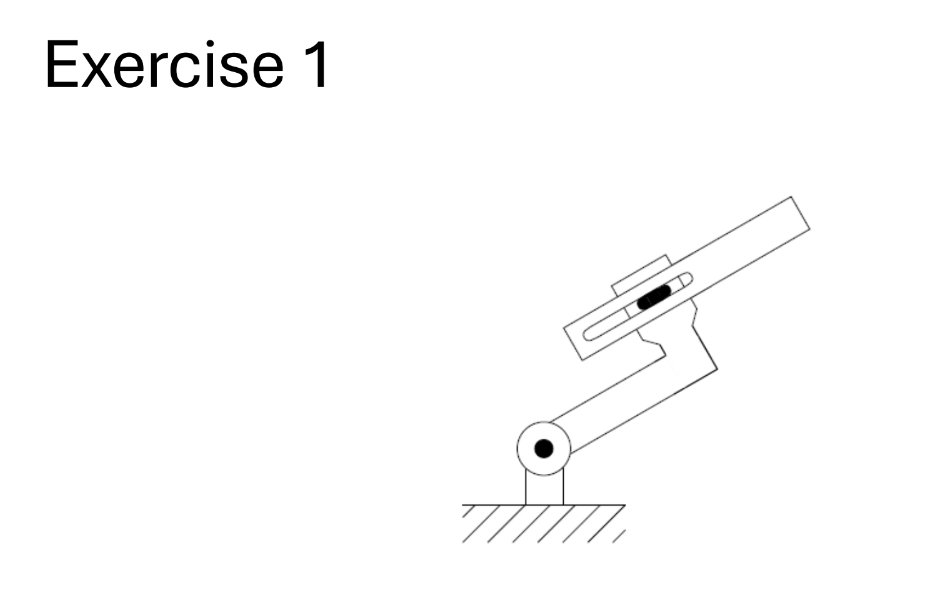
This figure shows the physical configuration of Robot 1, including its links and joints.
Frame Assignment / Scheme
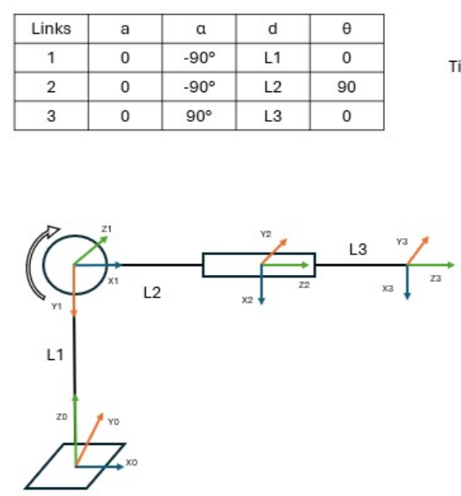
DH Transformation Matrix

exercise 2

This figure shows the physical configuration of Robot 2, including its links and joints.
Frame Assignment / Scheme
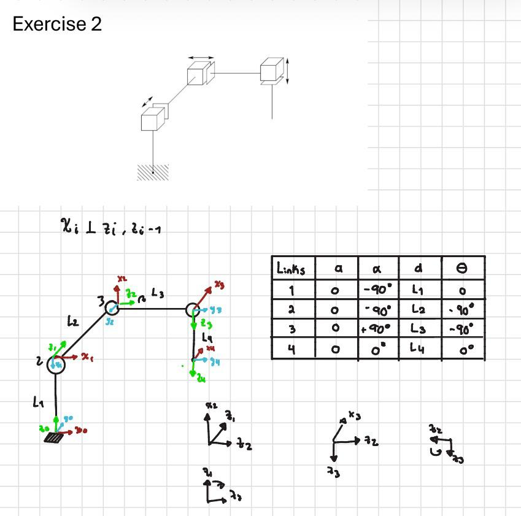
DH Transformation Matrix
 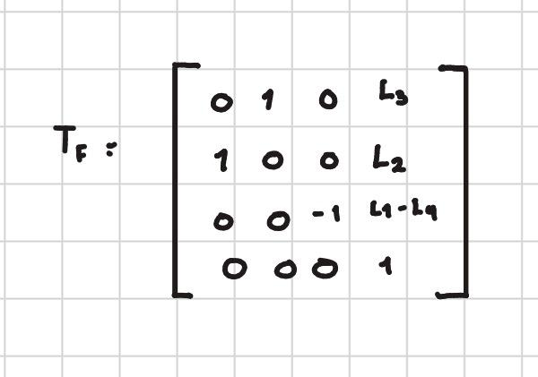
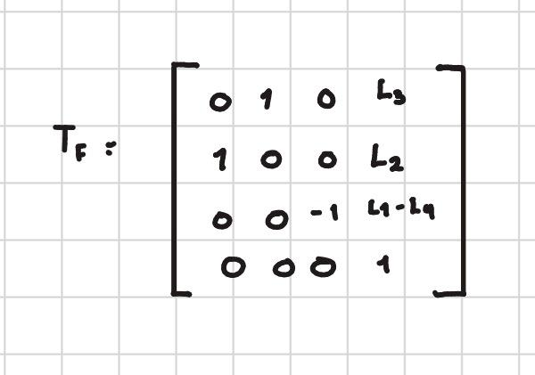
exercise 3

This figure shows the physical configuration of Robot 3, including its links and joints.
Frame Assignment / Scheme
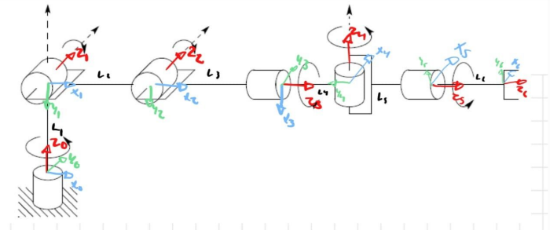

DH Transformation Matrix
exercise 4
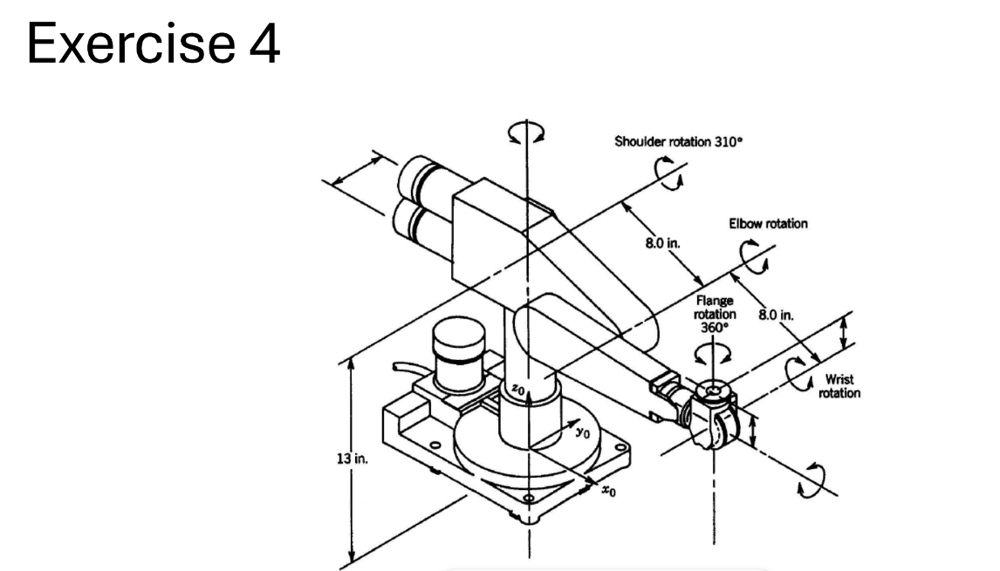
This figure shows the physical configuration of Robot 4, including its links and joints.
Frame Assignment / Scheme
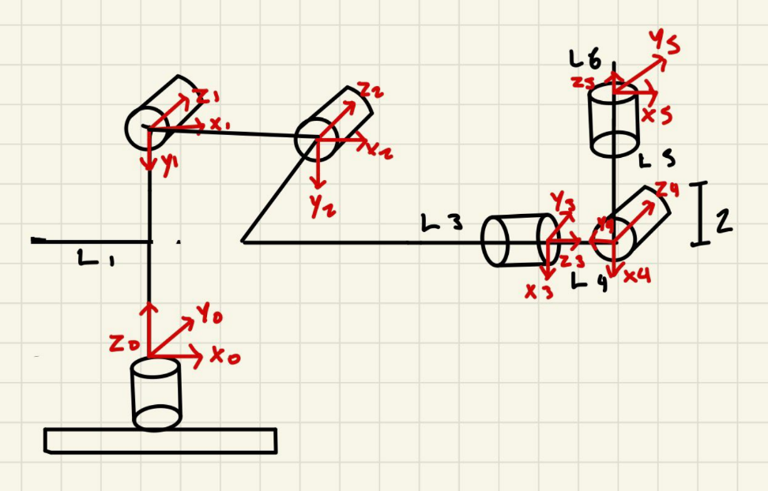
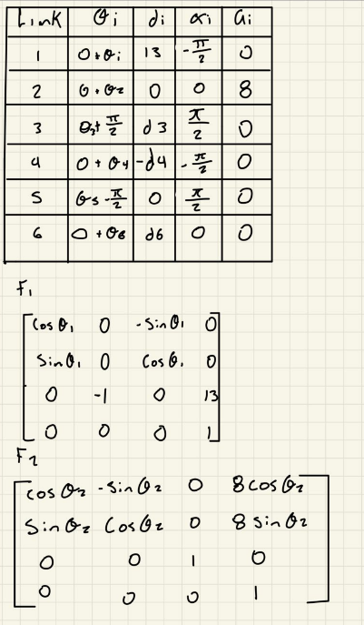
 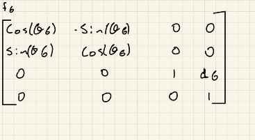
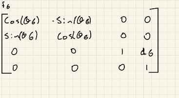
DH Transformation Matrix
T06 = [ r11 r12 r13 px r21 r22 r23 py r31 r32 r33 pz 0 0 0 1 ]
Rotation Terms
r11 = c1c23c4s5 + c1s23c5 - s1s4*s5
r12 = c6(c1c23s4 + s1c4) - s6(c1c23c4c5 - c1s23s5 - s1s4c5)
r13 = s6(c1c23s4 + s1c4) + c6(c1c23c4c5 - c1s23s5 - s1s4c5)
r21 = s1c23c4s5 + s1s23c5 + c1s4*s5
r22 = c6(s1c23s4 - c1c4) - s6(s1c23c4c5 - s1s23s5 + c1s4c5)
r23 = s6(s1c23s4 - c1c4) + c6(s1c23c4c5 - s1s23s5 + c1s4c5)
r31 = s23c4s5 - c23*c5
r32 = c6s23s4 - s6(s23c4c5 + c23s5)
r33 = s6s23s4 + c6(s23c4c5 + c23s5)
Position Terms
px = c1(8c2 + 8c23 - d4s23) - d3*s1
py = s1(8c2 + 8c23 - d4s23) + d3*c1
pz = 13 + 8s2 + 8s23 + d4*c23 + d6
exercise 5

This figure shows the physical configuration of Robot 5, including its links and joints.
Frame Assignment / Scheme
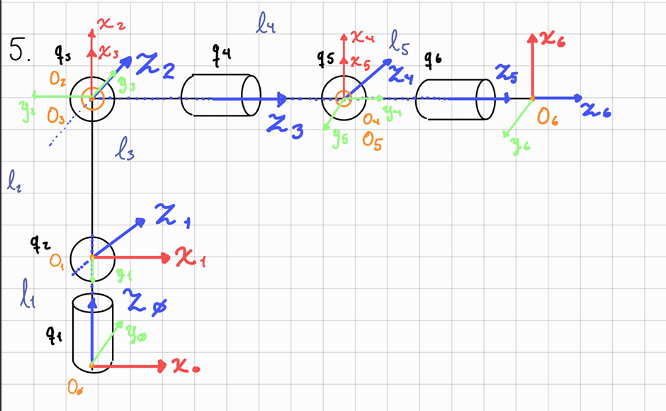
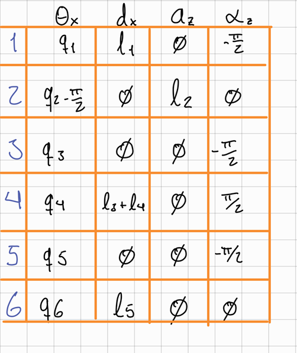
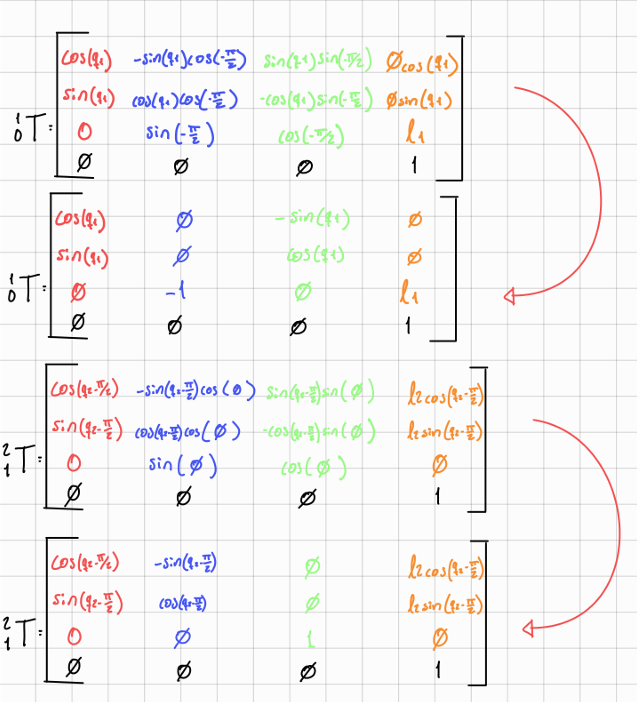
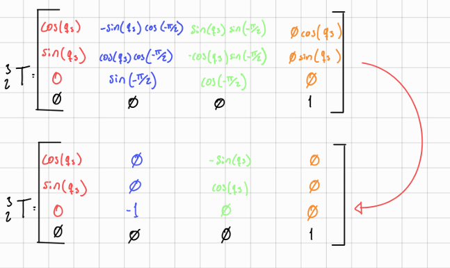
 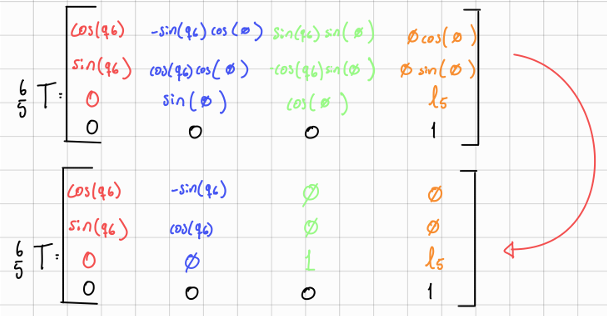
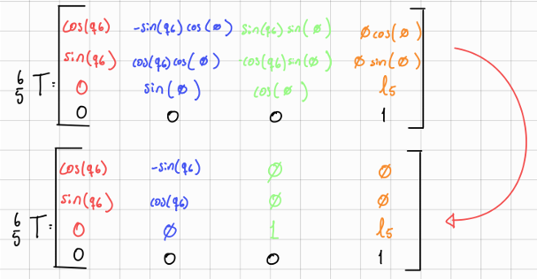
DH Transformation Matrix
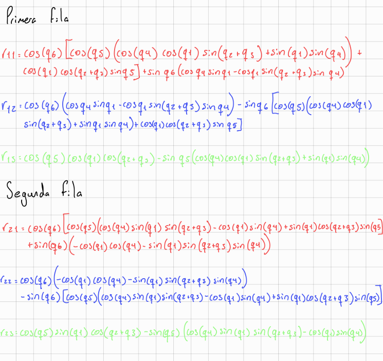 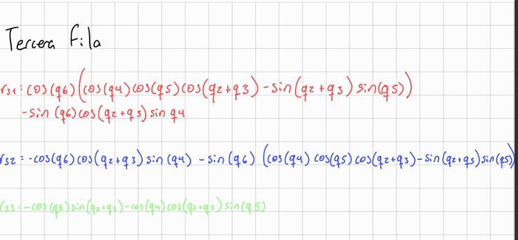